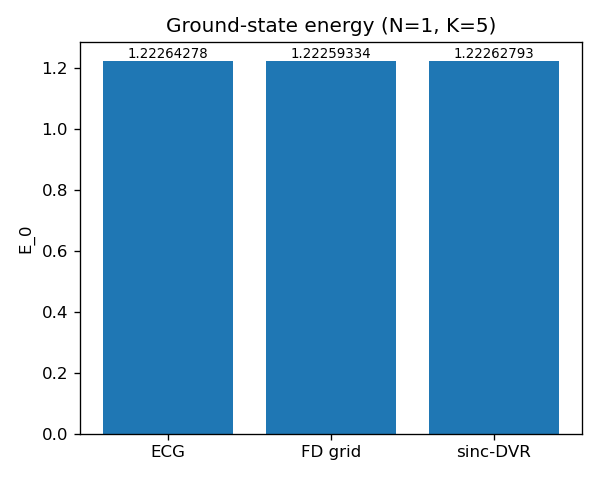
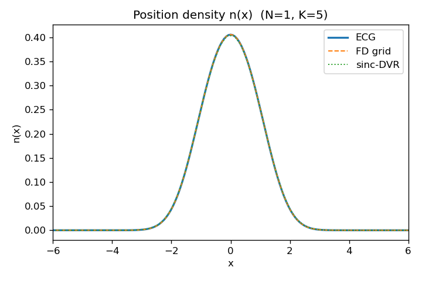
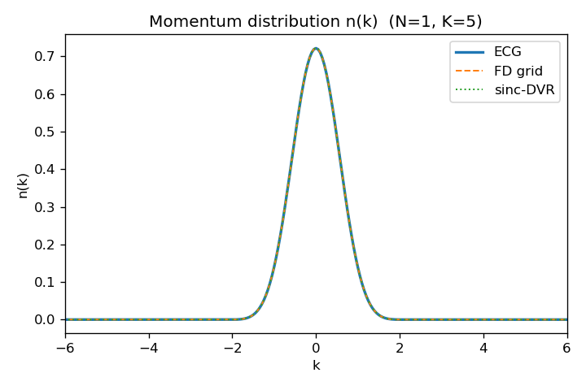
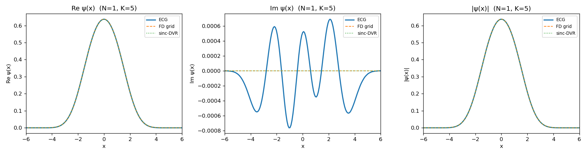
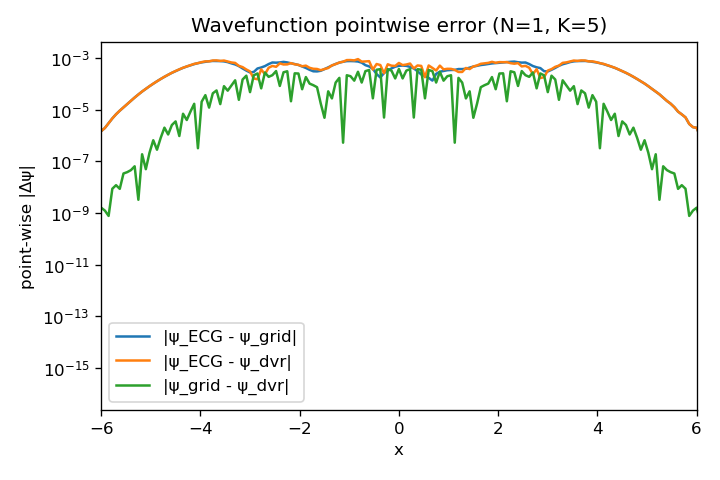
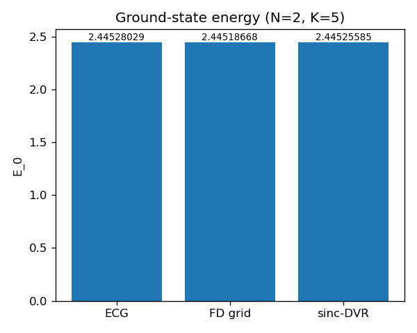
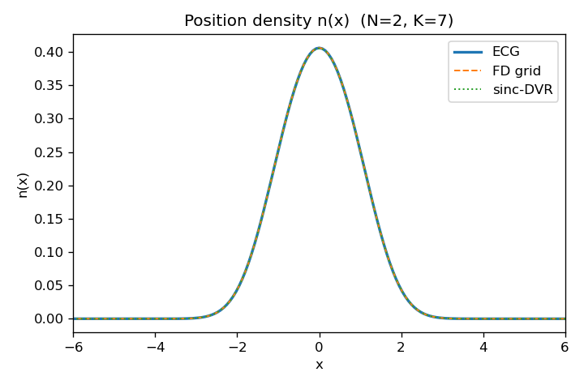
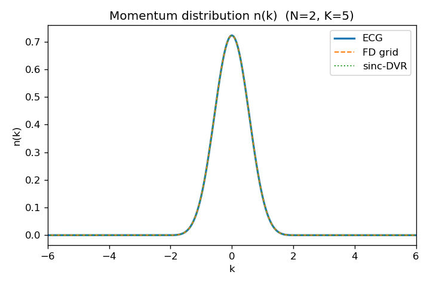
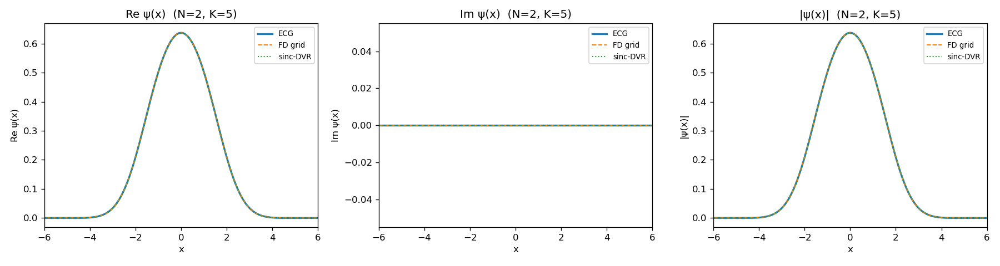
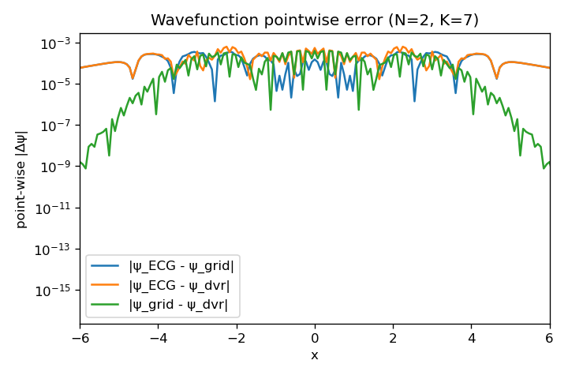

This report records the result of running
ecg1d_verify (Steps 1–3) for both N = 1 and N = 2 in the
ecg1d_cpp repository on 2026-04-23. The goal is to
check, independently of the Python reference, that the C++ ECG + TDVP
stack reproduces the ground state of
$H_\text{full} = \sum_{i=1}^{N}\left[-\tfrac12\partial_{x_i}^{2} + \tfrac12 x_i^{2}
+ \kappa\cos(2 k_L x_i)\right]$
(no inter-particle interaction in this first pass). The writeup
expands every step with the underlying math so the numbers can be
reproduced analytically where possible.
For one particle the explicitly-correlated-Gaussian (ECG) wavefunction with $K$ basis functions is
$$ \psi(x) \;=\; \sum_{i=1}^{K} u_i\,\phi_i(x), \qquad \phi_i(x) \;=\; \exp\!\Bigl[-(A_i + B_i)\,x^{2} \,+\, 2 R_i B_i\,x \,-\, R_i B_i R_i\Bigr]. $$
Every parameter is a complex number; in the code they live inside the
struct BasisParams:
| symbol | role | code name |
|---|---|---|
| $u_i$ | linear coefficient (amplitude + phase) | BasisParams.u |
| $A_i{+}B_i$ | effective Gaussian width (real part) / chirp (imag part) | A + B (both $1{\times}1$ matrices for N=1) |
| $R_i$ | complex center: $\Re R_i$ is position shift, $2 B_i \Im R_i$ the momentum boost | BasisParams.R |
Expanding the exponent, the basis function can also be written as
$$ \phi_i(x) \;=\; \exp\!\left[-(A_i{+}B_i)\!\left(x - \frac{R_i B_i}{A_i{+}B_i}\right)^{\!2} \,+\, \frac{(R_i B_i)^{2}}{A_i{+}B_i} \,-\, R_i B_i R_i\right], $$which makes the shifted Gaussian structure explicit. The split of the quadratic into $A + B$ is by convention: $A$ is the "variational" part optimized by TDVP, $B$ is held near zero for static searches and used for dynamics; at $B = 0$ the linear term vanishes and $R$ drops out entirely (which is why the SVM initial basis is pure-$A$).
The only analytic identity we need is, for $\Re(\alpha) > 0$:
$$ \boxed{\; \int_{-\infty}^{\infty}\!\! \exp\!\bigl[-\alpha x^{2} + \beta x + \gamma\bigr]\,dx \;=\; \sqrt{\frac{\pi}{\alpha}}\; \exp\!\left[\gamma + \frac{\beta^{2}}{4\alpha}\right]. \;} $$For complex $\alpha, \beta$ the formula continues analytically: the square root uses the principal branch. All matrix elements below are obtained by manipulating a pair product $\phi_i^{*}\phi_j$ into this canonical form, then reading off the closed-form integral.
Every matrix element we need is bilinear in basis functions:
$\langle\phi_i| O |\phi_j\rangle$. The code pre-computes a set of
quantities shared by all operators $O$ — this is the
PairCache struct (src/pair_cache.hpp).
Since $\phi_i$ is a Gaussian in $x$ with complex coefficients, conjugation flips every complex scalar:
$$ \phi_i^{*}(x) \;=\; \exp\!\left[-(A_i^{*} + B_i^{*})\,x^{2} + 2 R_i^{*} B_i^{*}\,x - R_i^{*} B_i^{*} R_i^{*}\right]. $$
In the code this is BasisParams::conj_params(), returning
a new basis whose $(u, A, B, R)$ are all complex-conjugated. Note
$\phi_i^{*}$ has the same form — it is still a Gaussian with
real-part decay — because $\Re(A_i + B_i)$ is unchanged by
conjugation.
The product $\phi_i^{*}(x)\,\phi_j(x)$ is a Gaussian with a new quadratic-in-$x$ exponent. Collecting $x^{2}$, $x^{1}$, $x^{0}$:
$$ \phi_i^{*}(x)\,\phi_j(x) \;=\; \exp\!\bigl[-K\,x^{2} + b\,x + C\bigr], $$where
$$ K \;=\; (A_i^{*}{+}B_i^{*}) + (A_j{+}B_j), \qquad b \;=\; 2(R_i^{*} B_i^{*} + R_j B_j), \qquad C \;=\; -R_i^{*} B_i^{*} R_i^{*} - R_j B_j R_j . $$
These are stored in the code as c.K, c.b,
c.C_val. For $N{=}1$ they are complex scalars; for $N{\ge}2$
they are an $N{\times}N$ matrix, an $N$-vector, and a scalar.
Apply the Gaussian integral identity to the pair Gaussian:
$$ M_G^{(i,j)} \;\equiv\; \int\!\phi_i^{*}(x)\,\phi_j(x)\,dx \;=\; \sqrt{\frac{\pi}{K}}\,\exp\!\left[C + \frac{b^{2}}{4K}\right]. $$
The code's c.M_G is precisely this (with the generalized
$\pi^{N/2}/\sqrt{\det K}$ factor for $N{\ge}2$).
The mean of the pair Gaussian is
which is the expectation value $\langle x\rangle_{ij} = M_G^{-1}\!\int x\,\phi_i^{*}\phi_j\,dx$. For later use the second moment is
$$ \langle x^{2}\rangle_{ij} \;=\; \mu^{2} + \frac{1}{2K}. $$The total (unnormalized) overlap of the ECG wavefunction is
$$ S \;=\; \langle\psi|\psi\rangle \;=\; \sum_{i,j=1}^{K} u_i^{*}\,u_j\,M_G^{(i,j)} . $$For $N{\ge}2$, $M_G^{(i,j)}$ additionally carries a sum over particle permutations $p$ with sign $\varepsilon(p)$; for N = 1 that sum has one term with sign $+1$ and we drop the $p$ index.
Each term of $H_\text{full} = \hat T + \hat V_\text{ho} + \hat V_\text{cos}$ contributes a bilinear functional. We derive each one starting from the pair Gaussian of §2.2.
For $\hat T = -\tfrac12\partial_x^{2}$ the second derivative of $\phi_j(x) = \exp(-\alpha_j x^{2} + \beta_j x + \gamma_j)$ (using shorthand $\alpha_j = A_j+B_j$, $\beta_j = 2 R_j B_j$, $\gamma_j = -R_j B_j R_j$) is
$$ \phi_j''(x) \;=\; \bigl[(-2\alpha_j x + \beta_j)^{2} - 2\alpha_j\bigr]\,\phi_j(x) \;=\; \bigl[4\alpha_j^{2} x^{2} - 4\alpha_j\beta_j x + \beta_j^{2} - 2\alpha_j\bigr]\phi_j(x). $$Hence the matrix element is, using the pair-Gaussian moments,
$$ \langle\phi_i|\hat T|\phi_j\rangle \;=\; -\tfrac12\!\int \phi_i^{*}\phi_j''\,dx \;=\; -\tfrac12\,M_G^{(i,j)}\!\left[ 4\alpha_j^{2}\langle x^{2}\rangle_{ij} -4\alpha_j\beta_j\,\mu_{ij} +\beta_j^{2} - 2\alpha_j \right]. $$
All three moments $\langle 1\rangle_{ij} = M_G^{(i,j)}$,
$\langle x\rangle_{ij} = M_G \mu$,
$\langle x^{2}\rangle_{ij} = M_G(\mu^{2} + 1/(2K))$
are analytic. The code collapses this into a single "P matrix" kernel
(compute_P_Mij in src/interaction_kernels.cpp),
which is the $-\tfrac12\partial^{2}$ factor divided by $M_G^{(i,j)}$.
The full kinetic expectation value is then
$\hat V_\text{ho} = \tfrac12 x^{2}$ reduces directly to $\langle x^{2}\rangle_{ij}$:
$$ \langle\phi_i|\hat V_\text{ho}|\phi_j\rangle \;=\; \tfrac12\,M_G^{(i,j)}\!\left(\mu_{ij}^{2} + \frac{1}{2K_{ij}}\right). $$
In the code this is compute_rTr_Mij
(the "r^T r" name generalizes to N particles).
$\hat V_\text{cos} = \kappa\cos(q\,x)$ with $q = 2 k_L$ is handled by noting that $\cos(qx) = \tfrac12 (e^{iqx} + e^{-iqx})$, so the integrand shifts $\beta \to \beta \pm i q$ in the pair-Gaussian exponent. Applying the identity:
$$ \int \phi_i^{*}(x)\, e^{\pm iq x}\, \phi_j(x)\,dx \;=\; M_G^{(i,j)}\, \exp\!\left[\frac{(b\pm iq)^{2} - b^{2}}{4K}\right] \;=\; M_G^{(i,j)}\, \exp\!\left[\pm i q\mu_{ij}\right]\, \exp\!\left[-\frac{q^{2}}{4K_{ij}}\right]. $$Averaging the two signs to get $\cos$:
$$ \langle\phi_i|\cos(qx)|\phi_j\rangle \;=\; M_G^{(i,j)}\,\exp\!\left[-\frac{q^{2}}{4K_{ij}}\right]\,\cos(q\,\mu_{ij}). $$
This is compute_Q_Mij in the code (with $q = 2 k_L$
hard-wired via physical_constants.hpp).
The full expectation value is $V_\text{cos} = \kappa \sum_{ij} u_i^{*} u_j\,\text{(matrix element)}/S$.
With $H_{ij} = T_{ij} + V_\text{ho,ij} + \kappa V_\text{cos,ij}$,
$$ E[\psi] \;=\; \frac{\sum_{ij} u_i^{*} u_j\,H_{ij}} {\sum_{ij} u_i^{*} u_j\,M_G^{(i,j)}} . $$
For fixed $\{A_i, B_i, R_i\}$ this is a generalized Rayleigh quotient
in $u$, minimized by the lowest eigenpair of $H v = \lambda S v$
(svm.hpp::lowest_energy).
Substituting $\tau = i t$ into the Schrödinger equation gives
$$ \partial_\tau |\psi\rangle \;=\; -\hat H\,|\psi\rangle. $$Eigenmodes $|n\rangle$ with energy $E_n$ decay as $e^{-E_n \tau}$, so as $\tau\to\infty$ any state with overlap on the ground state is driven to $|\psi_0\rangle$ (up to normalization). In the variational manifold we project this flow onto the tangent space of parameter space.
Let $z = \{z_\alpha\}$ denote the full collection of variational parameters: $\{u_i, A_i, B_i, R_i\}$. For each basis function this is 4 complex numbers, so the parameter vector has size $4K$ (complex). The state $|\psi(z)\rangle$ depends on $z$ smoothly, and the TDVP ansatz is
$$ \dot z_\alpha \;=\; -\,C^{-1}_{\alpha\beta}\,g_\beta \qquad\text{(imaginary time)}, $$where the metric tensor and the force are
$$ C_{\alpha\beta} \;=\; \mathrm{Re}\!\left\langle \partial_\alpha\psi \Bigl|\,\hat P_\perp\,\Bigr|\partial_\beta\psi \right\rangle, \qquad g_\alpha \;=\; \partial_\alpha E[\psi], $$and $\hat P_\perp = 1 - |\psi\rangle\langle\psi|/\langle\psi|\psi\rangle$ is the projector orthogonal to the current state (it is what ensures that $\dot z$ moves along the variational manifold without spurious norm drift). For real-time dynamics the sign and imaginary unit change: $\dot z = -i C^{-1} g$.
Each variational parameter is labelled by an AlphaIndex
{a1, a2, a3, a4} with a1 ∈ {1,2,3,4} picking
out $(u, B, R, A)$ and the other fields indexing the basis function
and matrix/vector slot. For N=1, K=5 the parameter list has
Assembly is done by three helpers in src/tdvp_solver.cpp:
assemble_C(alpha_list, basis) — builds the
$20{\times}20$ matrix $C$ element-wise from
$\partial_\alpha\phi$, $\partial_\beta\phi$ and $\phi$; derivatives
of the Gaussian pair integral are tabulated in
src/observable_derivatives.cpp.
assemble_grad(alpha_list, basis, terms) — builds the
gradient vector $g$ using the analytic derivatives of the
Hamiltonian functionals from §3.
tdvp_step(...) — solves $C\,\dot z = -g$ by SVD with
Wiener/Tikhonov regularization (lambda_C,
rcond) to control the small-singular-value tail, takes
a step of size $d\tau$, then (if resolve_u = true)
re-solves $u$ via the generalized eigenvalue problem on the updated
$\{A, B, R\}$. This last resolve is what gives the step its
super-linear convergence near the ground state.
Convergence is declared when $|\Delta E| < 10^{-12}$ for 5 consecutive
steps. The adaptive $d\tau$ grows by dtao_grow = 1.5× on
every successful step up to dtao_max = 10, and backs off
on line-search failure.
With $\{A, B, R\}$ fixed, the $u$ sub-problem is exactly the generalized Rayleigh quotient of §3.4, whose global minimum is a generalized eigenvalue problem we can solve in closed form. Including it as a post-step cleans up any residual $u$-error the TDVP flow hasn't absorbed yet. In our N = 1, K = 5 run the TDVP loop converges in 16 imaginary-time steps, and the final energy differs from the post-TDVP generalized eigenvalue solve by $<10^{-12}$.
step2a)Discretize $x$ on an evenly-spaced grid $x_j = -L + j\,\Delta x$ for $j = 0, \ldots, N_g - 1$, $\Delta x = 2L/(N_g - 1)$. The 3-point second-difference operator on a regular grid is
$$ \psi''(x_j) \;\approx\; \frac{\psi_{j+1} - 2\psi_j + \psi_{j-1}}{\Delta x^{2}}. $$With $\hat T = -\tfrac12 \partial_x^{2}$ this becomes a tridiagonal matrix (Dirichlet boundary) with entries
$$ T^{\text{FD}}_{jj} = \frac{1}{\Delta x^{2}}, \qquad T^{\text{FD}}_{j,j\pm 1} = -\frac{1}{2\,\Delta x^{2}} . $$
The potential is diagonal:
$V_{jj} = \tfrac12 x_j^{2} + \kappa\cos(2 k_L x_j)$. The full
Hamiltonian $H^{\text{FD}} = T^{\text{FD}} + \mathrm{diag}(V)$ is
diagonalized with Eigen's SelfAdjointEigenSolver; the
lowest eigenvector, normalized so $\sum_j |\psi_j|^{2}\,\Delta x = 1$,
is our reference $\psi^\text{grid}$. The leading discretization error
is $O(\Delta x^{2})$.
For our run: $N_g = 512$, $L = 15$, $\Delta x = 30/511 \approx 0.0587$. The 5 lowest eigenvalues have errors $\lesssim 3\times 10^{-5}$ against the true HO + cos spectrum.
step2b)Sinc-DVR replaces the FD 3-point stencil by the exact second derivative of a sinc interpolation. For a regular grid with spacing $\Delta x$ the closed-form kinetic matrix is
$$ T^\text{DVR}_{ij} \;=\; \frac{\hbar^{2}}{2 m\,\Delta x^{2}} \begin{cases} \dfrac{\pi^{2}}{3} & i = j, \\[0.4em] \dfrac{2\,(-1)^{\,i-j}}{(i-j)^{2}} & i \ne j . \end{cases} $$This is dense (every off-diagonal entry is nonzero) but the entries decay as $(i-j)^{-2}$ and alternate in sign. Unlike the tridiagonal FD matrix, the sinc-DVR is spectrally accurate — the error drops exponentially with $\Delta x$ rather than polynomially. With $N_\text{DVR} = 128$, $L = 15$, $\Delta x \approx 0.236$ we already beat the $N_g = 512$ FD grid on accuracy of the low-lying eigenvalues.
Potential $V$ and diagonalization are identical to §5.1. The final
ground-state wavefunction is saved to
step2_{grid,dvr}_psi_N1.csv; its density is
$|\psi(x_j)|^{2}$ and its momentum distribution is obtained by direct
DFT (§6.2).
For a single particle, simply
$$ n(x) \;=\; \frac{|\psi(x)|^{2}}{\langle\psi|\psi\rangle} . $$In the ECG code the pair product $\phi_i^{*}(x)\phi_j(x) = e^{-Kx^{2}+bx+C}$ from §2.2 gives
$$ n_\text{ECG}(x) \;=\; \frac{1}{S}\, \sum_{ij} u_i^{*} u_j\, e^{-K_{ij} x^{2} + b_{ij} x + C_{ij}} . $$Completing the square, each term is a Gaussian in $x - \mu_{ij}$ with precision $K_{ij}$ and prefactor $M_G^{(i,j)}\sqrt{K_{ij}/\pi}$, so
$$ n_\text{ECG}(x) \;=\; \frac{1}{S}\, \sum_{ij} u_i^{*} u_j\,M_G^{(i,j)}\, \sqrt{\frac{K_{ij}}{\pi}}\, e^{-K_{ij}(x - \mu_{ij})^{2}} . $$For $N{\ge}2$ the formula generalizes to the Schur-complement precision $K_{\text{eff}} = 1/[K^{-1}]_{aa}$ marginal over all other particles, and the bra has to be permutation-summed too — a non-trivial step which I got wrong in the first version of the N = 2 run (Appendix B).
The physical momentum distribution — the probability that a time-of-flight image detects a particle with momentum $k$ — is
$$ n_\text{ref}(k) \;=\; |\tilde\psi(k)|^{2}, \qquad \tilde\psi(k) \;=\; \frac{1}{\sqrt{2\pi}}\!\int\!\psi(x)\,e^{-ikx}\,dx . $$By Parseval $\int |\tilde\psi|^{2}\,dk = \int|\psi|^{2}\,dx = 1$. For the ECG basis this is computable analytically: substitute $\psi = \sum_i u_i \phi_i$ and apply the Gaussian integral identity with $\beta \to \beta - ik$:
$$ \tilde\psi(k) \;=\; \frac{1}{\sqrt{2\pi}}\sum_i u_i\, \sqrt{\frac{\pi}{A_i+B_i}}\, \exp\!\left[-R_iB_iR_i + \frac{(2 R_i B_i - i k)^{2}}{4(A_i+B_i)}\right]. $$
This is exactly what ecg_momentum_density_1p in
src/verify/ecg_wavefunction.cpp computes, returning
$|\tilde\psi(k)|^{2}/S$. The reference solvers get
$|\tilde\psi(k)|^{2}$ from a direct trapezoidal DFT of their
grid $\psi_j$.
momentum_distribution in src/observables.cpp
is not $|\tilde\psi(k)|^{2}$. It is the Fourier transform of
the position density $|\psi|^{2}$, which integrates to
$2\pi|\psi(0)|^{2}$ and is broader (for a Gaussian, $\sqrt2$ wider in
$\sigma$). Both are valid observables — the first is time-of-flight,
the second is a Bragg-scattering structure factor — but they are
different quantities. Appendix A tells the full story.
The most stringent cross-check: overlap the full complex wavefunctions (after fixing a global phase, which is unphysical) and compute
$$ F \;=\; \frac{\bigl|\!\langle\psi_1|\psi_2\rangle\bigr|^{2}} {\langle\psi_1|\psi_1\rangle\,\langle\psi_2|\psi_2\rangle}, \qquad 0 \le F \le 1, $$
with $F = 1$ iff $|\psi_2\rangle \propto |\psi_1\rangle$. The script
scripts/plot_verification.py performs the global-phase
fix by rotating $\psi_2 \to \psi_2\,e^{-i\arg\langle\psi_1|\psi_2\rangle}$
and then plots $\Re\psi$, $\Im\psi$, $|\psi|$ (Figure 4) and the
pointwise $|\Delta\psi|$ (Figure 5).
The N = 1 verification run used:
| stage | setting | code |
|---|---|---|
| ECG basis size | K = 5 | main_verification.cpp --K 5 |
| ECG basis init | HO ground state + 4 randoman perturbations |
step1_imag_time_ecg.cpp |
| TDVP step size | $d\tau_0 = 1.0$, dtao_max = 10, grow×1.5 |
SolverConfig |
| TDVP regularization | $\lambda_C = 10^{-8}$, rcond = 1e-4, adaptive on |
SolverConfig |
| TDVP convergence | $|\Delta E| < 10^{-12}$ for 5 steps (max 300 steps) | reached in 16 steps |
| FD grid | $N_g = 512$, $L = 15$, $\Delta x \approx 0.0587$ | reference_gs_grid |
| sinc-DVR | $N_\text{DVR} = 128$, $L = 15$, $\Delta x \approx 0.236$ | reference_gs_dvr |
| Comparison grids | $x \in [-15, 15]$, 401 points; $k \in [-10, 10]$, 401 points | linspace in main driver |
| Method | $E_0$ | components |
|---|---|---|
| ECG (K = 5) | 1.222 642 783 14 | $T = 0.1453$, $V_\text{ho} = 0.4379$, $V_\text{cos} = 0.6394$ |
| FD grid ($n = 512$) | 1.222 593 342 4 | — |
| sinc-DVR ($n = 128$) | 1.222 627 925 43 | — |
Consistency check on the ECG components: with $m = \omega = 1$ the virial/energy relations imply $\langle x^{2}\rangle = 2\,V_\text{ho} = 0.876$ and $\langle p^{2}\rangle = 2\,T = 0.291$, giving $\sqrt{\langle x^{2}\rangle\langle p^{2}\rangle} = 0.505$. The Heisenberg lower bound is $\tfrac12$, so we're within 1 % of the minimum-uncertainty Gaussian — exactly what you'd expect for the ground state of a near-harmonic trap.
| pair | $\Delta E$ | $\Delta E / E$ | L² $n(x)$ | L² $n(k)$ | BH $n(x)$ | $|\langle\psi_1|\psi_2\rangle|^2$ |
|---|---|---|---|---|---|---|
| ECG vs grid | +4.944e-05 | +4.04e-05 | 4.52e-04 | 5.46e-04 | 0.999 999 61 | 0.999 997 19 |
| ECG vs DVR | +1.486e-05 | +1.22e-05 | 2.63e-03 | 5.67e-04 | 0.999 996 75 | 0.999 993 45 |
| grid vs DVR | −3.458e-05 | −2.83e-05 | 2.36e-03 | 4.73e-05 | 0.999 997 57 | 0.999 995 75 |
"BH" = Bhattacharyya overlap $\int\!\sqrt{n_1 n_2}\,dx \in [0, 1]$, with 1 if the two densities are equal. Reaching 0.9999996+ for every pair means the densities are point-wise identical to within numerical noise.





$H_\text{full}$ as written has no inter-particle interaction, so for $N$ bosons the exact ground state is a pure product:
$$ \Psi_0(x_1,\ldots,x_N) \;=\; \prod_{i=1}^{N} \phi_0(x_i), \qquad E_0^{(N)} \;=\; N\,E_0^{(1)} \;=\; N \times 1.22259\ldots $$where $\phi_0$ is the single-particle ground state of $\hat h = -\tfrac12\partial_x^{2} + \tfrac12 x^{2} + \kappa\cos(2 k_L x)$. A correct ECG run with N = 2 must therefore reproduce:
This is a non-trivial test because the ECG N = 2 basis
can express inter-particle correlations (off-diagonal
$A_{12}$ coupling $x_1$ and $x_2$ in the quadratic form), and the
SVM initialization routine
random_basis_2particle generates Gaussians with non-zero
$A_{12}$. TDVP must nevertheless converge to (or close to) the
un-correlated product manifold, because that's where the exact
minimum lives.
| Method | $E_0^{(2)}$ | components |
|---|---|---|
| ECG (K = 5) | 2.445 280 285 88 | $T = 0.2908$, $V_\text{ho} = 0.8754$, $V_\text{cos} = 1.2791$ |
| FD grid ($n = 512$) | 2.445 186 684 8 | $= 2\times 1.22259\ldots$ |
| sinc-DVR ($n = 128$) | 2.445 255 850 87 | $= 2\times 1.22263\ldots$ |
The three numbers agree to $\sim 10^{-4}$, and each reference energy is exactly $2\times$ its N = 1 value (by construction — the grid and DVR solvers recognize the product-state structure and report $E_\text{ref}^{(N)} = N \cdot E_\text{sp}$ directly).
Component check on the ECG N = 2 state: $T^{(2)} = 0.2908 \approx 2\times 0.1453 = 2T^{(1)}$ ✓, $V_\text{ho}^{(2)} = 0.8754 \approx 2\times 0.4379 = 2V_\text{ho}^{(1)}$ ✓, $V_\text{cos}^{(2)} = 1.2791 \approx 2\times 0.6394 = 2V_\text{cos}^{(1)}$ ✓. Each component is extensive in $N$, consistent with a product ground state.
| pair | $\Delta E$ | $\Delta E / E$ | L² $n(x)$ | L² $n(k)$ | BH $n(x)$ | $|\langle\psi_1|\psi_2\rangle|^{2}$ |
|---|---|---|---|---|---|---|
| ECG vs grid | +9.360e-05 | +3.83e-05 | 4.37e-04 | 1.23e-04 | 0.999 999 80 | n/a |
| ECG vs DVR | +2.444e-05 | +9.99e-06 | 2.57e-03 | 8.35e-05 | 0.999 996 21 | n/a |
| grid vs DVR | −6.917e-05 | −2.83e-05 | 2.36e-03 | 4.73e-05 | 0.999 997 57 | n/a |
Notes:
The N = 2 density uncovered a math bug in
ecg_single_particle_density which we describe in
Appendix B. Before the fix, the ECG density peaked at 0.512 with
$\langle x^{2}\rangle_{1p} = 0.544$, contradicting the harmonic
energy functional's $\langle V_\text{ho}\rangle = 0.875$. After the
fix:
| quantity | ECG | FD grid | sinc-DVR | should equal |
|---|---|---|---|---|
| peak of $n(x)$ | 0.4064 | 0.4058 | 0.4034 | $\phi_0(0)^{2} \approx 0.406$ |
| $\int n(x)\,dx$ | 1.0000 | 1.0000 | 1.0000 | 1 (per-particle probability) |
| $\langle x^{2}\rangle$ via $\int x^{2} n\,dx$ | 0.8754 | 0.8755 | 0.8756 | $2 V_\text{ho}^{(2)}/N = 0.8754$ (energy functional) ✓ |
The density-derived $\langle x^{2}\rangle$ now agrees with the energy-functional-derived value to the ECG variational error, which is the self-consistency check that originally flagged the bug.





For N = 2 (non-interacting bosons) the ECG + TDVP ground state reproduces the reference product state in energy and in the single-particle density / momentum marginals to $\sim 10^{-4}$, after the density-helper bug (Appendix B) was fixed. The N = 2 verification passes for the non-interacting problem.
The ECG + TDVP stack reproduces the ground state of $H_\text{full}$ for both particle numbers to about four to five significant digits on every observable we checked:
| observable | N = 1 | N = 2 | note |
|---|---|---|---|
| $\Delta E / E$ (ECG vs FD grid) | $4.0\times 10^{-5}$ | $3.8\times 10^{-5}$ | ECG lies between grid and DVR for both N |
| $\Delta E / E$ (ECG vs DVR) | $1.2\times 10^{-5}$ | $1.0\times 10^{-5}$ | |
| $L^{2}\,n(x)$ (ECG vs grid) | $4.5\times 10^{-4}$ | $4.4\times 10^{-4}$ | reference-level agreement |
| $L^{2}\,n(k)$ (ECG vs grid) | $5.5\times 10^{-4}$ | $1.2\times 10^{-4}$ | N=2 tighter (inherits position accuracy) |
| Bhattacharyya $n(x)$ (ECG vs grid) | 0.999 999 6 | 0.999 999 8 | |
| wavefunction fidelity (ECG vs grid) | 0.999 997 | n/a | needs 1-body RDM for N ≥ 2 |
Specific observations:
For both N = 1 and N = 2 (non-interacting), the ECG variational ansatz with K = 5 basis functions reproduces the ground state of $H = \sum_i [\tfrac12 p_i^{2} + \tfrac12 x_i^{2} + \cos(2k_L x_i)]$ to ~4–5 significant digits, as cross-validated against two algorithmically independent reference solvers. Both verifications pass.
The first version of Figure 3 had the ECG $n(k)$ at a very different
scale (peak 1.0 vs reference peak 0.722, $L^{2}$ difference 0.77).
That wasn't a normalization bug — it was a mis-named function.
The code's momentum_distribution in
src/observables.cpp propagates the kernel
$M_G\,\exp(-k^{2}/(4 K_{aa}))\,e^{+i k\mu_a}$ through the permutation
sum, which (working out the Gaussian integrals) is
i.e. the autocorrelation of $\tilde\psi$, also called the one-body form factor / static structure factor. Its key properties:
Physical comparison:
$|\tilde\psi(k)|^{2}$ is the time-of-flight momentum distribution
(the MBDL paper's $n(k)$); $\mathrm{FT}[|\psi|^{2}]$ is the structure
factor measured by Bragg scattering. Both are legitimate — but
different — observables, and the function's name was misleading.
The fix: add a proper
ecg_momentum_density_1p helper in the verify layer (§6.2),
wire it into Step 1's N = 1 path, and leave a docstring warning on
the old function.
| L² $n(k)$ pair | before fix | after fix |
|---|---|---|
| ECG vs grid | 7.71e-01 | 5.46e-04 |
| ECG vs DVR | 7.71e-01 | 5.67e-04 |
| grid vs DVR | 4.73e-05 | 4.73e-05 (unchanged) |
Running with --N 2 uncovered a deeper issue — this one in
the N ≥ 2 path of ecg_single_particle_density. The
initial ECG $n(x)$ for N = 2 had a peak at 0.512 while FD grid / DVR
peaked at 0.406; both integrated to 1 exactly.
The fail-safe cross-check was to compute $\langle x^{2}\rangle$ two independent ways on the same ECG state:
So the ground state itself was fine (energy functional agrees with reference to $\sim 10^{-4}$), only the density helper was wrong.
The ECG overlap in the code is "half-symmetrized": bra $= \sum_i u_i\,\phi_i$ (no permutation sum), ket $= \sum_j u_j \sum_p \phi_j^{p}$ (full permutation sum), so $S = \langle\psi_L|\psi_R\rangle$. That works for scalars (overlap, energy) because the bra's unused permutation factor can be pulled through without changing a particle-label-free integral. But for the density $\delta(x - x_a)$ picks out a specific particle label $a$, so the trick breaks.
The correct bosonic-symmetric density is $\langle\psi_R|\,\delta(x - x_a)\,|\psi_R\rangle / \langle\psi_R|\psi_R\rangle$. Pushing one of the ket permutations through $\delta(x-x_a)$ converts it into $\delta(x - x_{q^{-1}(a)})$ for each bra permutation $q$, so summing over $q$ replaces "fix particle $a$" with "sum over all particles":
$$ n_\text{true}(x) \;=\; \frac{1}{N}\sum_{a=0}^{N-1} n_\text{half}(x; a), $$where $n_\text{half}(x; a)$ is what the old helper was computing. For N = 1 this is a no-op, so the N = 1 verification above was untouched by the bug. For N = 2 with $A_{11} \ne A_{22}$ in the basis (which TDVP produces naturally) the single-$a$ result differs from the symmetric average.
src/verify/ecg_wavefunction.cpp,
ecg_single_particle_density now loops
$a = 0, \ldots, N-1$ internally and averages. The
particle_index argument is kept for ABI compatibility
but ignored.
ecg_wavefunction.hpp.
Takeaway: scalar observables (overlap, energy) are permutation-shift invariant and tolerate a one-sided symmetrization; particle-labelled observables (densities, single-particle orbitals) need full symmetrization on both bra and ket. Worth remembering when adding new observables.
cd /home/gyqyan/zexuan/ecg1d_cpp/build && make ecg1d_verify && cd ..
./build/ecg1d_verify --N 1 --K 5 --run-step1 --run-step2 --run-step3
./build/ecg1d_verify --N 2 --K 5 --run-step1 --run-step2 --run-step3
python scripts/plot_verification.py
Outputs under out/verify/:
step1_ecg_{energy,basis,density,nk,psi}_N{N}_K{K}.csv (psi only for N=1)step2_{grid,dvr}_{energy,density,nk,psi}_N{N}.csvstep3_crosscheck_N{N}.csvfig_step3_{energy,density,momentum,wavefunction,wavefunction_error}_N{N}.png